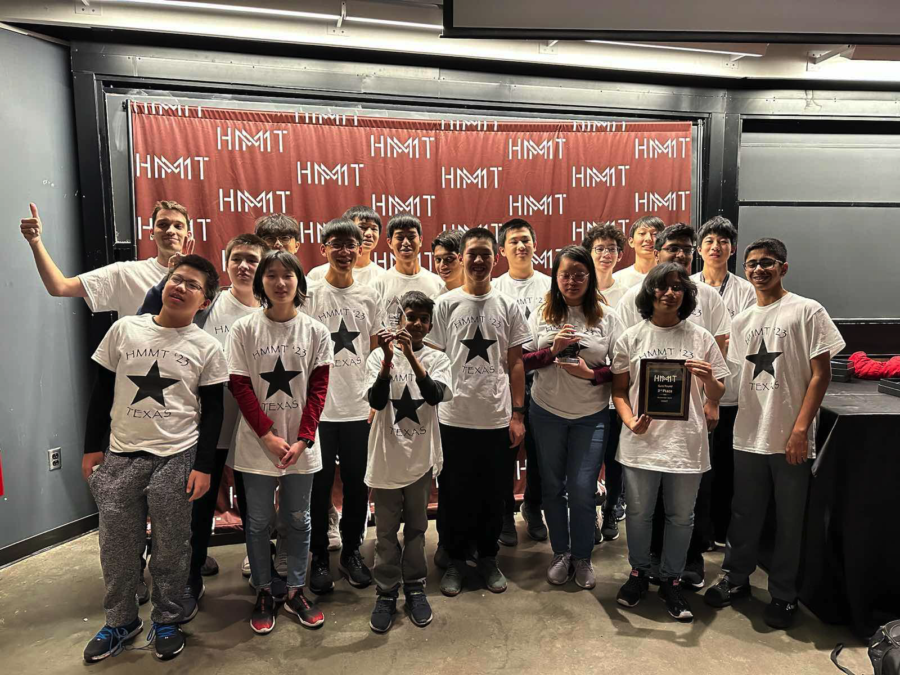

The Texas HMMT November 2023 Team
Texas Tornado
Jiya Dani
Joshua Kou
Rohan Pavuluri
Tarun Rapaka
Andrew Shen (Captain)
Emma Wu
Texas Thunder
Amogh Akella
Aaron Fan
Sophie Li
Justin Liu
Richard Wang
Ethan Yang (Captain)
Texas Typhoon
Kevin Hu
Nolan Jiang
Krithik Manoharan
Drake Tan
Matthew Xie
Eric Zang (Captain)
Coaches and organizers
Matthew Kroesche
Tina Li
Individual results
Richard Wang placed 5th individually, 10th in General Round, and 9th in Theme Round.
Eric Zang placed 10th individually and 2nd in Theme Round.
Drake Tan placed 14th individually, 21st in General Round, and 23rd in Theme Round.
Andrew Shen placed 19th individually, 38th in General Round, and 16th in Theme Round.
Sophie Yi placed 28th individually and 10th in Theme Round.
Amogh Akella placed 40th individually and 34th in General Round.
Jiya Dani placed 43rd individually and 40th in Theme Round.
Krithik Manoharan placed 38th in General Round.
Joshua Kou placed 42nd in Theme Round.
Team results
Texas Tornado placed 4th in Sweepstakes, 12th in Team Round, and 3rd in Guts Round.
Texas Thunder placed 13th in Sweepstakes, 30th in Team Round, and 9th in Guts Round.
Texas Typhoon placed 6th in Sweepstakes, 5th in Team Round, and 20th in Guts Round.
Team photo

(Back to Main Page)